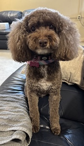

My name is Cooper Toyne, I am 18 years old and I am from Kettering Ohio. I went to school at Kettering Fairmont Highschool. I lived with my Mom, Dad, brother, and two dogs George and Lucy. Now I am living off campus with my brither and one of his friends.
To add to that, my dog George is a miniaturer schnauzer that is 8 years old. My other dog Lucy, is a Cockapoo (Cockerspaniel Poodle mix) and is 12 years old. When we first got Lucy we weren't looking to get a new dog. We were only fostering her for the time because my mom had worked at the Humane Society. My dad was super against getting a new dog but funny enough he was the one who came up with the idea of keeping her.

One of my favorite hobbies is listening to music. At the moment I am really enjoying a genre people would call Dark Plug or even Balloon. (Meaning a whimsical and airy/ambient style) Most of the artists I listen to now fall under this category. One of my favorite artists is named Okaymar, here is a link to his SoundCloud.
Lastly, I wanted to talk about how much I am enjoying this course. At first I didn't think i was going to like it but I'd say this is my favorite course so far. Don't get me wrong I like all the other classes but because of the class I took in highschool I feel like I already know most of what they are teaching so far. On the other hand, this class is something completely new to me and it has been a very fun challenge.